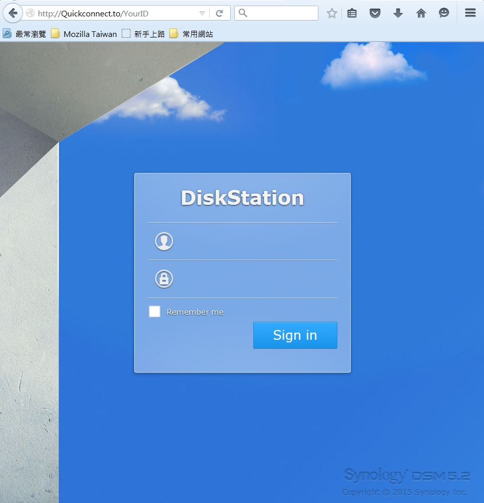
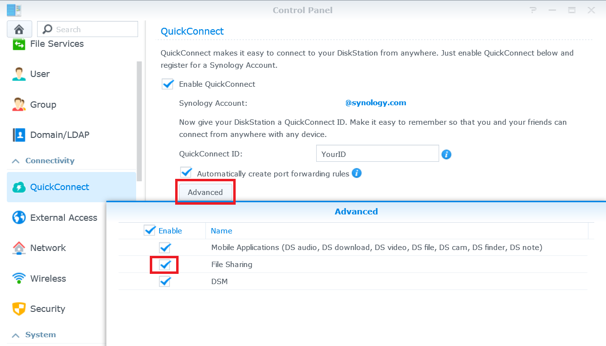

Auf Synology NAS über das Internet zugreifen und Dateien freigeben

Überblick
Mit QuickConnect können Sie ohne den Aufwand für das Einrichten von Portweiterleitungsregeln oder anderen komplizierten Netzwerkeinstellungen bequem die Verbindung zu Ihrem Synology NAS über das Internet herstellen. Mit QuickConnect können Sie ganz einfach eine Verbindung über eine benutzerdefinierte Adresse wie Quickconnect.to/example herstellen.
1. QuickConnect einrichten
- Gehen Sie zu Systemsteuerung > QuickConnect.
- Markieren Sie das Kontrollkästchen QuickConnect aktivieren.

- Klicken Sie, wenn Sie kein Synology-Konto besitzen, auf
Bei einem Synology-Konto anmelden oder ein Konto registrieren. Geben Sie die erforderlichen Informationen ein und klicken Sie auf OK. Geben Sie, wenn Sie bereits ein Synology-Konto besitzen, Ihre Kontoinformationen ein.

- Erstellen Sie im Feld QuickConnect-ID Ihre eigene QuickConnect-ID. Klicken Sie anschließend auf Übernehmen.

- Ihre QuickConnect Link-Informationen werden angezeigt. Verwenden Sie diesen Links, um auf Ihren Synology NAS zuzugreifen. In diesem Beispiel ist die Adresse für DSM http://Quickconnect.to/YourID.

- Wenn der QuickConnect DSM-Link nicht angezeigt wird, klicken Sie auf Erweitert, und stellen Sie sicher, dass DSM aktiviert ist.

- Sie können jetzt den QuickConnect DSM-Link für den Zugriff auf Ihren Synology NAS verwenden!

2. Mit QuickConnect Dateien auf Ihrem NAS teilen
Wenn QuickConnect aktiviert ist, können Sie Dateien, die auf Ihrem Synology NAS gespeichert sind, ganz einfach ohne Portweiterleitung mit jedem teilen.
- Aktivieren Sie zuerst die HTTPS-Verbindung, um Ihre Dateien sicher teilen zu können. Gehen Sie zu Systemsteuerung > Netzwerk.
- Markieren Sie das Kontrollkästchen HTTPS-Verbindung aktivieren, und klicken Sie auf Übernehmen.

- Aktivieren Sie dann die Dateifreigabe für QuickConnect. Gehen Sie zu Systemsteuerung > QuickConnect.
- Klicken Sie auf Erweitert, und stellen Sie sicher, dass das Kontrollkästchen Dateifreigabe markiert ist.

Hinweis:
Bei der Konfiguration von erweiterten QuickConnect-Einstellungen empfehlen wir, dass Sie sich bei DSM mit der lokalen IP-Adresse oder dem Domainnamen Ihres Synology NAS anmelden.
- Jetzt sind Sie bereit, den Austausch von Dateien mit QuickConnect zu beginnen. Öffnen Sie File Station, und klicken Sie mit der rechten Maustaste auf die Datei oder den Ordner, die/den Sie freigeben möchten. Klicken Sie dann auf Datei-Links teilen im Kontextmenü.

- Ein Austausch-Link wird erstellt. Teilen Sie einfach diesen Link mit Familie und Freunden, damit sie den/die freigegebene(n) Ordner/Datei herunterladen können.